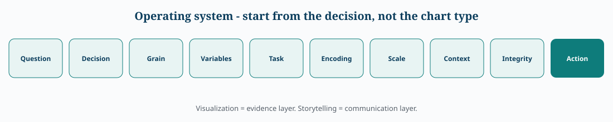
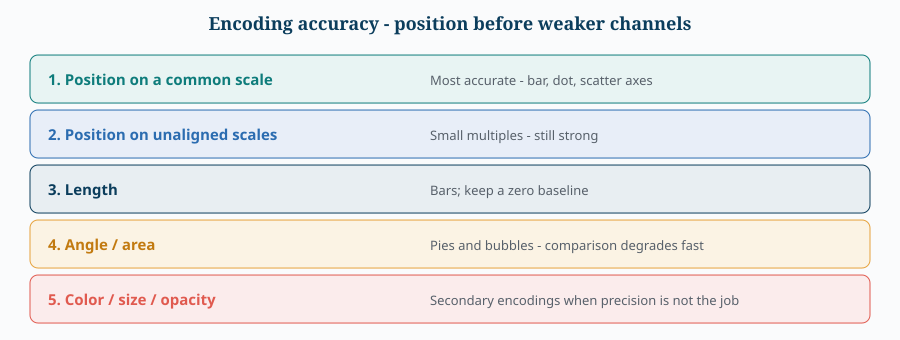
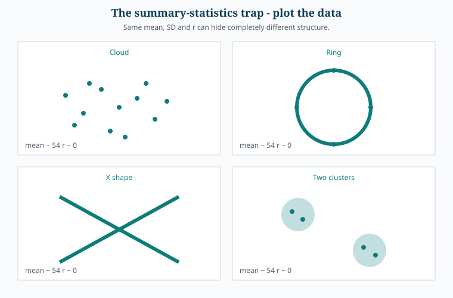
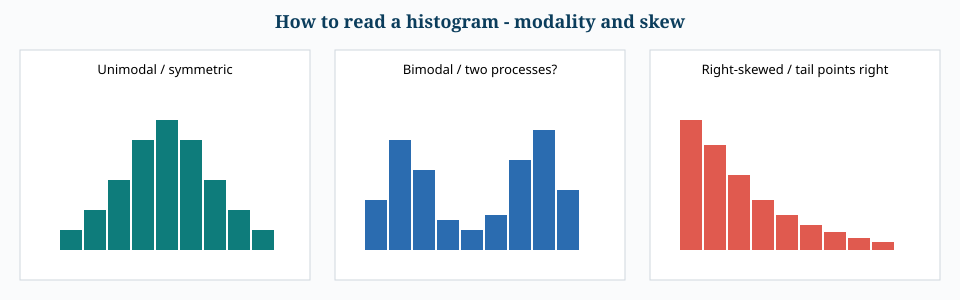
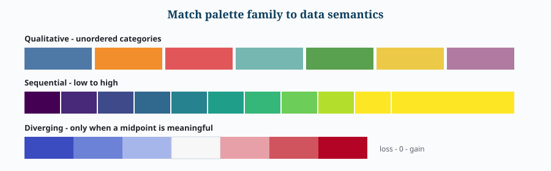
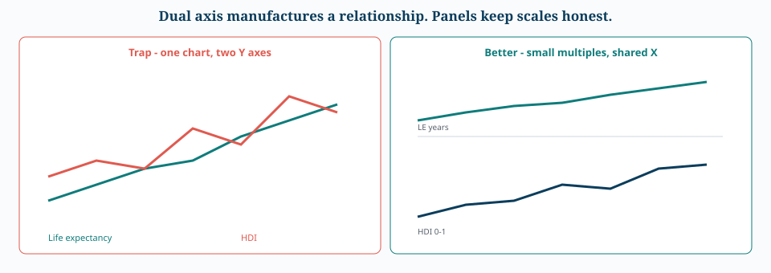
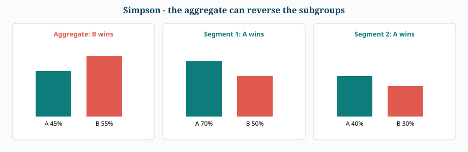
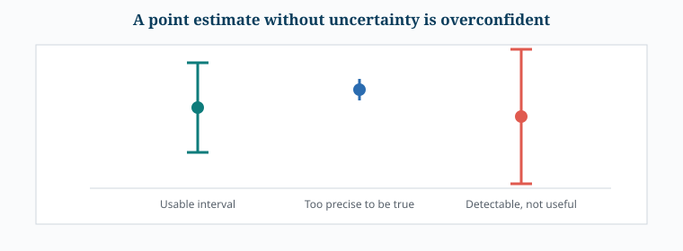

Visual Atlas — Teaching Charts & Figure Pack
How to use this atlas
- Learn a rule on the chapter page.
- Come here and look at the picture of that rule.
- Ask: what would a lie look like if I broke this rule?
A. Operating system
Every visual in this library is downstream of a decision.


flowchart LR
Q[Question] --> D[Decision]
D --> G[Data grain]
G --> V[Variable types]
V --> T[Analytical task]
T --> E[Visual encoding]
E --> S[Scale]
S --> C[Context]
C --> I[Integrity]
I --> A[Action]

B. Why you must plot the data
The Datasaurus lesson from Foundations: matching means, SDs and correlation do not imply matching structure.


Never assume that similar summary statistics imply similar data structure.
C. Core grammar
Histogram — read modality and skew first


flowchart TD
H[One continuous variable] --> B{What must I see?}
B -->|Shape / tails / modes| Hist[Histogram]
B -->|Compare groups compactly| Box[Box plot]
B -->|Two continuous relationship| Sc[Scatter]
B -->|Connected sequence| Ln[Line]
B -->|Category vs metric| Br{Log scale or several metrics?}
Br -->|No| Bar[Bar]
Br -->|Yes| Dot[Dot plot]D. Integrity
Truncated bars manufacture drama
22.5% vs 21.0% is a 1.5 percentage-point gap. A chopped axis can make it look like a landslide.

Dual axis vs small multiples
flowchart TD
M[Two metrics, incompatible units] --> X{Need a single visual relationship?}
X -->|Usually no| P[Two panels. Shared X if time. Honest Y scales.]
X -->|Tempted by dual axis| W[Stop. Changing either scale changes the apparent correlation.]E. Color semantics


| Family | Use when | Do not use when |
|---|---|---|
| Qualitative | Unordered categories | The values have low→high meaning |
| Sequential | Magnitude from low to high | Categories have no order |
| Diverging | A midpoint is semantically real | You just wanted a pretty two-hue ramp |
F. Chart-to-task pocket card
| Task | Default | Upgrade | Usual lie |
|---|---|---|---|
| Compare categories | Sorted bar / dot | Dot + log if span is huge | Pie with many slices |
| Change over time | Line | Log-Y for multiplicative growth | Connecting unrelated dated points |
| Distribution | Histogram | Several bin widths | Mean-only KPI |
| Compare distributions | Box | Box + points / violin / facets | Two averages |
| Relationship | Scatter + trend | Facet / color for a third variable | r as if it described every shape |
| Composition | 100% stacked | Only if the whole is meaningful | Comparing off-baseline segments |
| Screen many pairs | Correlation heatmap | Then inspect the scatter | Treating the heatmap as the analysis |
| Cycle | Rose / polar | Only if the phenomenon is circular | Pie for ordinary categories |
G. Constitution — wall card
- Question first, chart second.
- Position before color, size, angle, area.
- Bar length is magnitude; ordinary bars start at zero.
- No decorative 3D.
- Color family must match data semantics.
- Do not imply order where none exists.
- Do not invent a midpoint.
- Heatmaps summarize linear association only.
- Facet when a third variable would otherwise muddy the view.
- Polar coordinates are for genuine circularity.
- Prefer panels over dual axes.
- Remove chartjunk, keep context.
- Optimize for insight speed.
- A beautiful chart that hides the truth is a bad visualization.
Related chapters
H. Dashboard scan path
A dashboard is a decision surface. If the eye does not know where to land, more visuals make it worse.


I. Dual axis vs small multiples


J. Inference traps that look like chart problems




